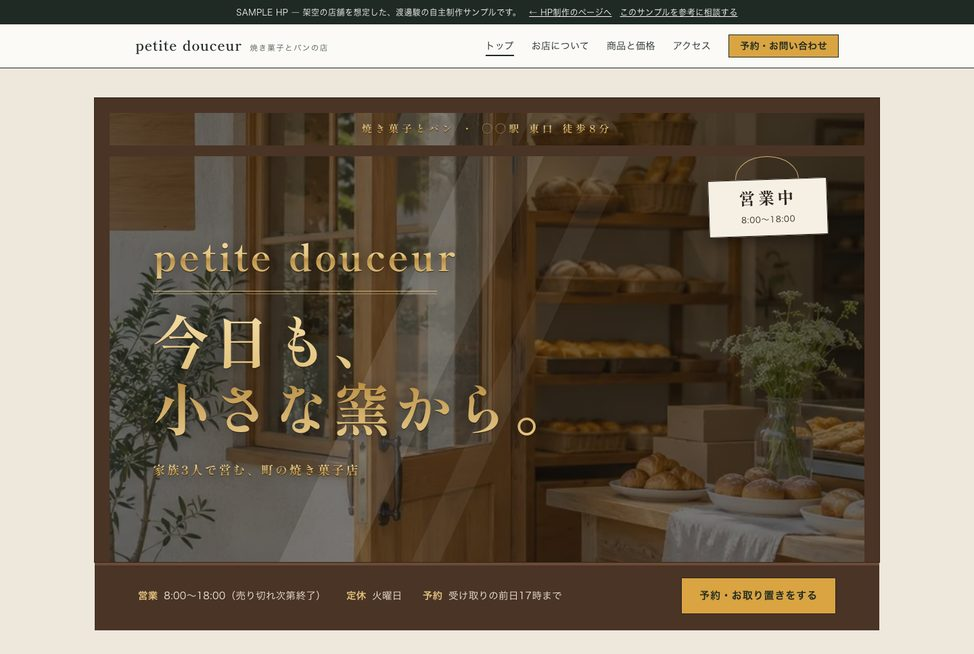

渡邊 駿｜ホームページ・LP制作と、記事・台本の執筆
伝えたいことを、伝わるページに。
個人事業主・小さなお店のホームページやLPを、構成と文章の整理から作ります。Webメディア・YouTubeチャンネルの記事と台本もお受けしています。
ご連絡への返信は24時間以内。お見積もりは無料です。
ホームページの見本焼き菓子とパンの店「petite douceur」自主制作・お店は架空

写真の上に文字を置くだけの形をやめ、店名と見出しをガラス戸の金文字にしました。
扉の札が見る人の時刻で「営業中」「本日終了」などに変わり、今行って開いているかがわかります。
ガラス戸、棚、店の奥、レジと、店の中を歩く順に並べました。
表示の速さ（スマホ）91 → 96できるまでの8つの段階を読む
SERVICES
できること
PROCESS
原稿から、完成画面まで。
ページを作る前の、何を載せるか決まっていない段階からご相談いただけます。上のパン屋さんの見本で、作る順番を切り替えて見られます。
今日も、小さな窯から。
家族3人で営む、町の焼き菓子店
- 営業
- 8:00〜18:00（売り切れ次第終了）
- 定休
- 火曜日
- 予約
- 受け取りの前日17時まで
デザインに入る前に、お店の言葉と、来る前に知りたい情報をそろえます。同業のお店のサイトを調べて、「焼き上がりの時間」と「取り置きの締め切り」を足しました。
※完成したページの文言を抜き出して並べています- ガラス戸店名・見出し・営業中の札
- 窓の下営業時間・定休日・予約の締め切りと、予約のボタン
- 棚8時・10時・14時の焼き上がり
- 店の奥仕込みと、祖母の代からの話
- レジ・黒板予約の決まり、お店の情報、お知らせ
この見本では、店の中を歩く順番に合わせました。順番と中身をご確認いただいてから、デザインに進みます。
営業時間・定休日・予約の締め切りを、ボタンと同じ帯に並べています。読んでから予約に進めるように、スクロールしなくても見える場所にしました。
- ご相談フォームから
- ヒアリング・お見積もり無料
- 完成の条件と、構成・文章の確認
- 執筆・制作
- 確認・修正標準1〜3回
- 納品・公開
最初のご相談では、ご依頼の種類・ご希望の時期・参考にしたいサンプルがわかると進めやすくなります。決まっていない項目があっても大丈夫です。
制作について相談するVOICE
いただいた評価と、お引き受けしたときのお約束。
「クオリティの高い記事へと
ブラッシュアップされました」
クライアント様（Webメディア運営）／記事の改稿・校閲合格のあとにいただいた評価 ― 修正の前と後を見る
- 作る前に、完成の条件を決めます作るもの・作らないもの・何ができたら完成かを、ご確認いただいてから始めます。
- 納品のときに、確認の記録をお渡ししますLP・ホームページでは、確かめた端末と表示の速さ、確かめられなかったことも書いてお渡しします。
- 24時間以内に返信します本業があるため、平日の日中のご連絡には、夜にお返事することがあります。
NEXT
これから、作例を増やしていく分野です。
いまお受けしているのは、記事・台本・LP・ホームページです。次の分野は、作例ができ次第、それぞれのページに載せていきます。
ENVIRONMENT
使用するデバイスやツールは、ご指定に合わせて対応できます。
DEVICE
MacBook
DESIGN & VIDEO
Adobe（Premiere Pro・Photoshop・Illustratorなど）
DOCUMENT
Googleドキュメント・スプレッドシート、Microsoft Office（Word・Excel・PowerPoint）
COMMUNICATION
Chatwork、Slackなど。ご指定のツールで連絡します。
上記以外のツールも、ご相談ください。
PROFILE
会社員として働きながら、副業でライターをしています。家族と過ごす「当たり前」を守りたくて副業を学び始め、どの仕事の土台にも「文章」があると知りました。以来、記事と動画台本を中心に、書く仕事を一つずつ手がけています。
本業があるぶん、一度に多くの案件はお受けしていません。修正のやりとりに時間を使えたほうが、仕上がりが良くなるからです。休日は鉄道旅行で、知らない街を歩いています。
CONTACT
記事・台本・LP・ホームページなど、どのご相談でもこちらからどうぞ。「こんなこと頼めるかな」という段階でも大丈夫です。24時間以内にお返事します。
クラウドワークスからのご連絡も受け付けています → プロフィール